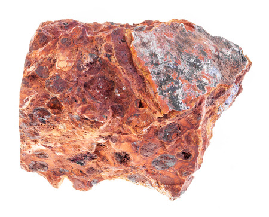
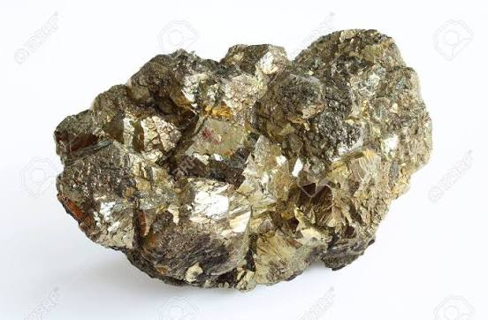

- Tính chất:
+ Ở nhiệt độ phòng: Có thể rắn & cấu tạo tinh thể (trừ Hg ở thể lỏng)
- Cấu tạo của tinh thể kim loại: Gồm các ion dương kim loại & electron hóa trị.
+ Ion dương; nằm ở các nút mạng tinh thể.
+ Electron hóa trị: chuyển động tự do xung quanh các nút mạng.


- Ở điều kiện thường, các kim loại đều có tính chất cơ bản sau:

- Các nguyên tử kim loại dễ nhường electron hoá trị:
M → Mⁿ⁺ + ne⁻

a) Hầu hết kim loại phản ứng với oxygen (trừ Au, Ag, Pt).
Ví dụ: Mg(s) + O₂(g) → 2MgO(s)
b) Tác dụng với sulfur (S)
Nhiều kim loại phản ứng với sulfur khi đun nóng (Hg có thể phản ứng ở nhiệt độ thường).
Ví dụ: 2Al(s) + 3S(s) → Al2S3(s)

Hầu hết kim loại nhóm IA, IIA có tính khử mạnh, tác dụng với H₂O ở nhiệt độ thường.
Ví dụ: 2Na(s) + 2H₂O(l) → 2NaOH(aq) + H₂(g)↑
Những kim loại có thế điện cực chuẩn E°Mⁿ⁺/M < −0,44 V có thể đẩy H₂ ra khỏi H₂O.

- Tác dụng với HCl, H₂SO₄ loãng:
Ở điều kiện chuẩn, kim loại có E°Mⁿ⁺/M < 0 có thể tác dụng với các acid tạo thành H₂.
Ví dụ: Fe(s) + H₂SO₄(aq) → FeSO₄(aq) + H₂(g)↑
- Tác dụng với H₂SO₄ đặc:
Hầu hết kim loại (trừ Pt, Au) có thể tác dụng với H₂SO₄ đặc; sulfur trong H₂SO₄ đặc đóng vai trò chất oxi hoá.
Ví dụ: Cu(s) + 2H₂SO₄(đặc) → CuSO₄(aq) + SO₂(g)↑ + 2H₂O(l)
Lưu ý: HNO₃ đặc, nguội và H₂SO₄ đặc, nguội làm thụ động hoá Al, Fe, Cr.

Kim loại hoạt động hoá học mạnh hơn đẩy kim loại hoạt động hoá học yếu hơn ra khỏi dung dịch muối của nó.
Ví dụ: Cu(s) + 2AgNO₃(aq) → Cu(NO₃)₂(aq) + 2Ag(s)

- Dạng tự do (Đơn chất): Chỉ tồn tại đối với các kim loại rất yếu, có tính kém hoạt động hóa học, không bị oxy hóa bởi môi trường khí quyển hay nước (ví dụ: Vàng Au, Bạch kim Pt, và một lượng nhỏ Đồng Cu, Bạc Ag tự nhiên).
- Dạng hợp chất (Quặng): Hầu hết các kim loại tồn tại trong tự nhiên dưới dạng hợp chất (oxide, sulfide, chloride, carbonate, sulfate...) nằm trong các khoáng vật và quặng.



- Nguyên tắc: Khử các ion kim loại trong hợp chất thành nguyên tử kim loại tự do: Mn+ + ne- → M
- Lựa chọn phương pháp: Phụ thuộc vào độ hoạt động hóa học (mức độ bền của hợp chất) của kim loại trong dãy điện hóa.

a) Điện phân oxide nóng chảy
- Ví dụ: Sản xuất Nhôm từ Bauxite

- Phương trình điện phân:
2Al2NO3 → 4Al + 3O2
Al2O3 nóng chảy hòa tan trong Cryolite (Na3AlF6) để giảm nhiệt độ nóng chảy (từ 2050 °C xuống ≈ 900 °C), tăng độ dẫn điện và tạo lớp màng bảo vệ nhôm lỏng khỏi bị oxy hóa.
Tại Cathode (cực âm): Al3+ + 3e- → Al
Tại Anode (cực dương): 2O2- → O2 + 4e-
b) Điện phân muối chloride nóng chảy:
- Ví dụ: Tách Natri từ NaCl:
2NaCl → 2Na (Cathode) + Cl2 (Anode)

a) Phương pháp Nhiệt luyện:

- Phạm vi: Điều chế các kim loại hoạt động trung bình và yếu (đứng sau Al trong dãy hoạt động: Zn, Fe, Sn, Pb, Cu).
- Nguyên tắc: Dùng chất khử mạnh (C, CO, H2, Al) để khử ion kim loại trong oxide ở nhiệt độ cao.
- Ví dụ (Luyện gang/thép trong lò cao):
Fe2O3 → 2Fe + 3CO2
b) Phương pháp thủy luyện

- Ví dụ (Tách đồng):
Fe + CuSO4 → FeSO4 + Cu
c) Phương pháp điện phân dung dịch
- Nguyên tắc: Sử dụng dòng điện 1 chiều để khử ion kim loại yếu trong dung dịch muối của nó, áp dụng trong việc điều chế các kim loại yếu.
- Ví dụ: Điện phân dung dịch CuCl2 để điều chế Cu:

- Tái chế Đồng (Cu):
- Lợi ích: Đồng tái chế giữ nguyên 100% tính chất cơ-lý hóa như đồng nguyên chất nhưng tiết kiệm tới 85% năng lượng so với khai thác từ quặng chalcopyrite.
- Quy trình: Phân loại dây điện/phế liệu -> Luyện tinh bằng phương pháp điện phân tinh chế (sử dụng cực anode là đồng thô phế liệu) để thu được đồng cathode đạt độ tinh khiết > 99,99%.
-Tái chế Sắt/Thép (Fe):
- Lợi ích: Tiết kiệm khoảng 60 – 74% năng lượng và giảm lượng lớn chất thải rắn so với quá trình sản xuất sắt từ quặng trong lò cao.
- Quy trình: Phế liệu thép được thu gom -> Dùng nam châm điện tách lọc -> Luyện trong lò hồ quang điện (EAF - Electric Arc Furnace) để tạo thép mới.

- Hợp kim là vật liệu kim loại chứa một hoặc nhiều nguyên tố khác, trong đó có ít nhất một nguyên tố là kim loại.

- Nhìn chung, hợp kim vẫn có những tính chất vật lý tương tự kim loại như ánh kim, dẫn điện, nhiệt, tuy nhiên vẫn có sự khác biệt:
+ Tính dẫn nhiệt và dẫn điện: kém hơn kim loại
+ Thường có độ cứng cao hơn và độ dẻo thấp hơn kim loại
+ Nhiệt độ nóng chảy: Khác so với kim loại (tùy vào thành phần và cấu tạo của từng loại)


- Ăn mòn kim loại là: sự phá hủy kim loại hoặc hợp kim do tác dụng của các chất trong môi trường (kim loại bị oxi hóa → ion kim loại).

- Xảy ra khi kim loại tiếp xúc trực tiếp với chất oxi hóa trong môi trường. Không tạo thành dòng điện.
-Ví dụ: Fe bị oxi hóa bởi O₂ ở nhiệt độ cao.


- Là cách gắn lên kim loại cần bảo vệ một kim loại khác hoạt động hóa học mạnh hơn (kim loại hi sinh).